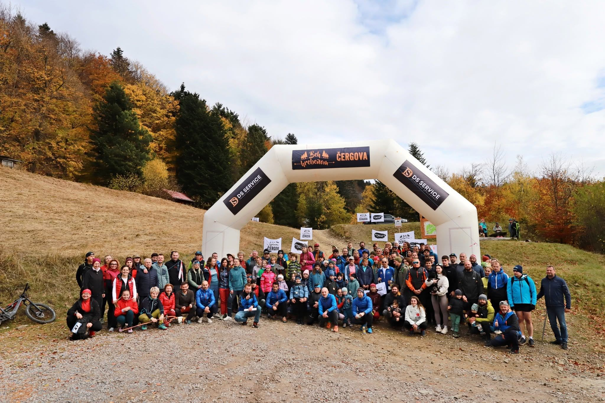

ČergovRun
Šicko do kopca.Bežíme spolu od decembra 2018. Organizujeme Beh hrebeňom Čergova aj Čergovský umirak a kedykoľvek sa dá, vybehneme spolu na hrebeň.
2018vznik klubu
60členov
2preteky ročne

Náš príbeh
od 27. 12. 2018OZ Čergovrun vzniklo 27. decembra 2018.
Príbeh dopíše Lukáš. Ako to celé začalo, kto bol pri tom a prečo práve Čergov. Pár odsekov, kľudne aj s historkou z prvého výbehu.
Spoločné výbehy
Najbližšie ukážkaPevný rozvrh nemáme. Keď sa ide hore, dáme vedieť a kto môže, pridá sa.
Podpora a rozvoj behu v Čergove
Čergovrun je bežecký klub s poslaním rozvíjať beh ako šport a komunitu v regióne Čergov. Sme zanietení pre zdravý životný štýl a spájame bežcov všetkých vekových kategórií, aby sme spoločne budovali silnú bežeckú komunitu.
KontaktLukáš Višňovský
Telefón+421 944 001 353
E-mailvisnovskylukas@gmail.com
2 %
Pošli nám 2 % z dane
Nestojí ťa to nič a pomôže to pretekom: značeniu trate, občerstvovačkám aj cenám.
- Vyplň Vyhlásenie o poukázaní podielu zaplatenej dane alebo príslušnú časť daňového priznania.
- Ako prijímateľa uveď OZ Čergovrun, IČO: doplníme chýba
- Vyhlásenie odovzdaj na daňovom úrade do 30. apríla.